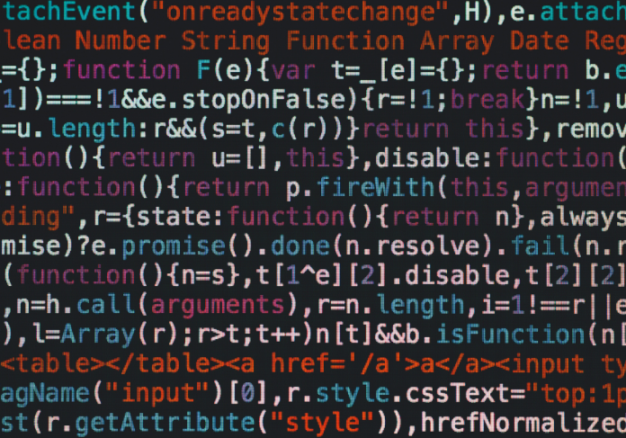

Mussum Ipsum, cacilds vidis litro abertis. Em pé sem cair, deitado sem dormir, sentado sem cochilar e fazendo pose. Leite de capivaris, leite de mula manquis sem cabeça. Eu nunca mais boto a boca num copo de cachaça, agora eu só uso canudis! Quem num gosta di mim que vai caçá sua turmis!
Mussum Ipsum, cacilds vidis litro abertis. Mais vale um bebadis conhecidiss, que um alcoolatra anonimis. Eu nunca mais boto a boca num copo de cachaça, agora eu só uso canudis! A ordem dos tratores não altera o pão duris. Posuere libero varius. Nullam a nisl ut ante blandit hendrerit. Aenean sit amet nisi.
